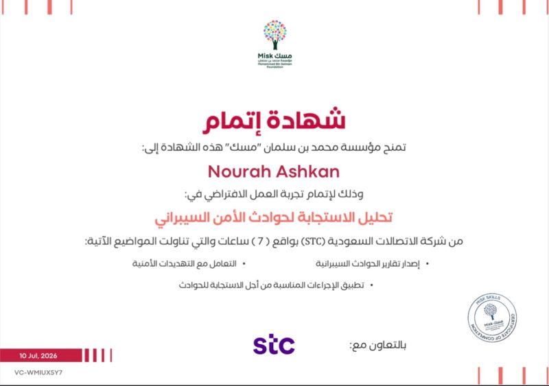
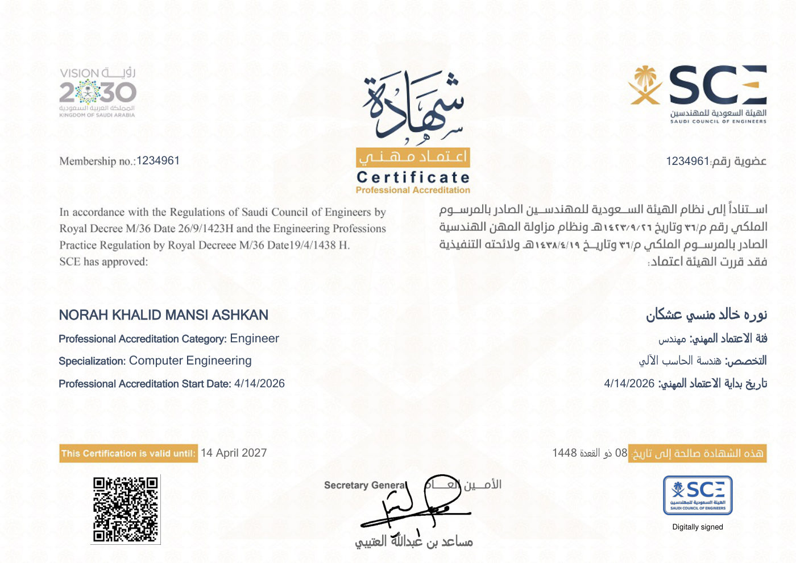
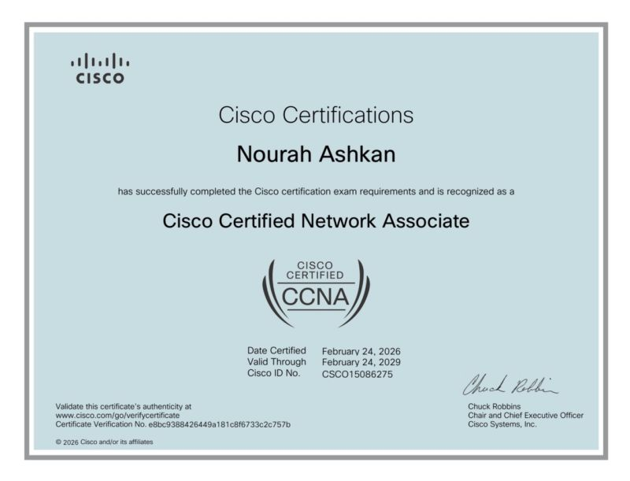
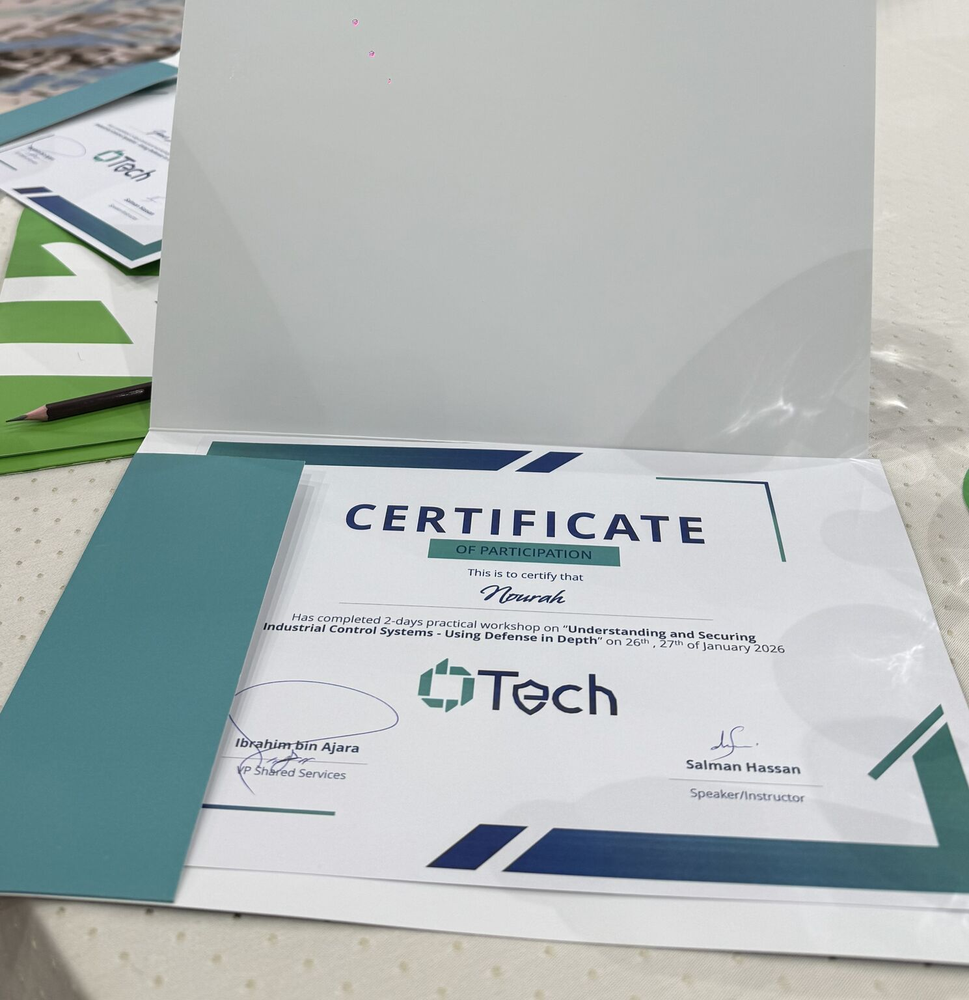
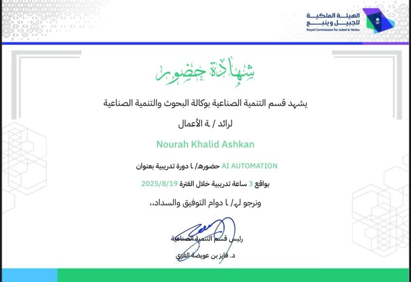
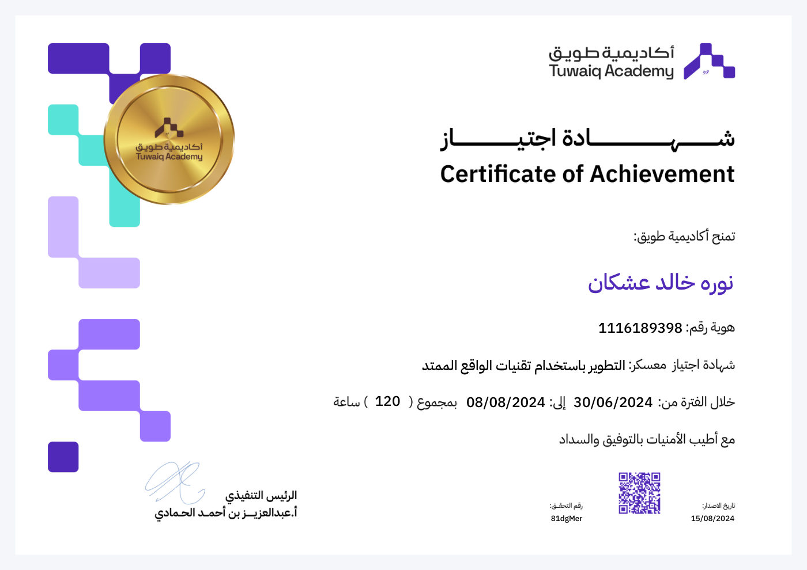

Hi, I'm
Nourah Ashkan.
Network & Cybersecurity Engineer
Computer Engineering graduate (Network Track) from Yanbu Industrial College, focused on OT/ICS cybersecurity — firewalls, endpoint security, Active Directory, and industrial network monitoring. Currently training at SAT Microsystems and troubleshooting a gym's network on the side.
01 About
I'm a Network & Cybersecurity Engineer from Yanbu, Saudi Arabia, with hands-on experience securing OT/industrial networks — from managing FortiGate firewalls and endpoint protection to patching industrial switches and running compliance checks. My coop training at YASREF gave me a front-row seat to real-world OT security operations, and my graduation project (built with a teammate) let me design a Purdue-Model-segmented OT network from scratch, firewall rules and all.
I like building things that hold up under pressure and proving they actually work — a segmented industrial network, a RADIUS/NPS authentication lab I debugged end to end, an IoT system that predicts parking availability, or a Telegram bot that automates my own job search. I also spent time leading as Co-President of the Cybersecurity Club at Yanbu Industrial College, and picked up a Best Innovative Project award for ThermoPark. All of it's documented on GitHub.
02 Timeline
A running log of projects, certifications, and milestones — newest first.
-
Tamheer Training — SAT Microsystems
Gaining hands-on experience in network and cybersecurity operations.
Gym Network Troubleshooting
Troubleshooting a local gym's wireless and audio network.
-
Cybersecurity Incident Response Analysis
Virtual job experience — Misk Foundation, in collaboration with STC (7 hours).

-
Jobs Finder Bot
A Telegram bot that automates my own job search — pulls Saudi cybersecurity/networking listings and GDP programs from multiple sources, dedupes against what I've already seen, ranks results against my profile, and delivers a daily digest. Built using a Workflows/Agents/Tools structure to keep the AI-assisted build deterministic and testable.
-
Professional Accreditation — Saudi Council of Engineers
Licensed as a Professional Engineer (Computer Engineering specialization). Membership No. 1234961, valid through April 2027.

-
RADIUS / NPS Authentication Lab
Built and troubleshot a virtual RADIUS authentication environment — Ubuntu and pfSense both generating RADIUS requests against a Windows NPS server backed by Active Directory. Diagnosed a full stack of issues (VirtualBox networking, APIPA addressing, RADIUS policy mismatches) using NPS event logs until both clients reached Access-Accept.
-
CCNA — Cisco Certified Network Associate
Cisco. Certificate verification No. e8bc9388426449a181c8f6733c2c757b.

-
Graduated — Bachelor of Computer Engineering
Network Track, Yanbu Industrial College. Completed after the required Cooperative Training Program.
-
Understanding & Securing ICS — Defense in Depth
2-day practical workshop by OTech, featuring Nozomi, Fortinet, and Industrial Defender presenting their OT security solutions.

-
OT Offline Testing Environment
Graduation project, built with a teammate — an offline ICS lab following the Purdue Model, with three segmented zones (OT LAN, Engineering/Test, IT/Enterprise) behind a pfSense firewall enforcing least-privilege rules. OpenPLC ran the control logic for a simulated tank process; Node-RED polled it over Modbus/TCP and drove an HMI-style dashboard.
-
Coop Training — YASREF (OT Cybersecurity)
Trainee, Technical Support Department. Managed and secured OT network components: FortiGate firewalls, Trellix endpoint security, Acronis backup/recovery, and patch management on Hirschman industrial switches. Ran monthly compliance checks and administered Active Directory & GPOs for industrial systems. Completed with a formal experience letter and certificate of recognition for professionalism and teamwork.
-
STEP — English Proficiency
Score: 78.
AI Automation Workshop
Royal Commission for Jubail & Yanbu, Industrial Development Dept (3 hours).

-
Active Directory Integration with FortiManager
Integrated Active Directory with FortiManager to enable secure, centralized authentication.
-
Thin-Client Deployment
Implemented a thin-client setup to manage the network remotely from the engineering room without physically accessing the rack room.
-
Online Backup Plan
Implemented an online backup plan to ensure load balancing, backup reliability, and system healthiness.
-
Best Innovative Project — ThermoPark
Awarded at Yanbu Industrial College's Project Day.
-
ThermoPark — Smart Parking System
Developed an IoT system that predicts vehicle departure using engine heat analytics, enabling proactive parking space management.
-
Co-President, Cybersecurity Club
Yanbu Industrial College.
-
XR Developing Bootcamp
Tuwaiq Academy, in collaboration with Metaverse — "Development Using Extended Reality Techniques," 120 hours.

-
Started Bachelor of Computer Engineering
Yanbu Industrial College, Network Track.
03 Contact
Want to collaborate, hire, or just talk networks and security? Reach out.